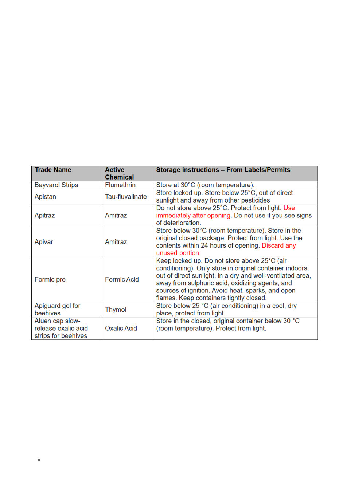

Resistance is not hypothetical. We already have documented resistance in Australia to popular
treatments like Bayvarol, which is exactly why Aluen CAP is viewed by many as a much‑needed
alternative. Smaller, practical pack sizes would help prevent beekeepers from storing opened strips,
losing potency, and unintentionally under‑dosing mites. But even the best alternative only works if
people can actually use it.
So, on behalf of the club, I reached out to Agriculture Victoria, the VAA (Victroian Apiarists
Association), CAP Products Australia and finally in frustation the APVMA (Australian Pesticides and
Veterinary Medicines Authority), and I’ve encouraged other clubs to do the same. I note both South
Gippsland, Mansfield & District, raised the same concerns.
What we’ve heard back
Agriculture Victoria acknowledged the issue and provided clarity around which products can be
stored after opening and which cannot. They recognise the challenge and are doing what they can
within their remit. They also suggested that we raise our concerns with the VAA so that the request
is backed by industry, making it clear to suppliers that this is a statewide issue rather than an
isolated one.
I also note that the Agriculture Victoria table should ideally include the Aluen CAP permit instruction
“Discard unused strips 24 hours after first opening the pouch.” which is a critical part of PER95790
and central to the challenges hobbyists are facing.
The VAA discussed the matter at their board meeting and agreed the issue is real, but noted that
emergency permit conditions limit what can be changed in the short term. Their suggestion was to
explore a “buddy system” like Bendigo’s.
And then came a detailed and constructive response from Aluen CAP (CAP Products Australia),
which added important context.
Aluen CAP’s response, and why it matters
Aluen CAP were very open in acknowledging the problem. They made it clear that:
They recognise the 60‑strip pack is challenging for hobbyists.